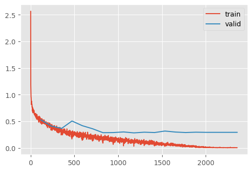

set_seed(42)
plt.style.use("ggplot")Augmentation
Improving training dynamics even further
Adapted from:
- https://youtu.be/nlVOG2Nzc3k?si=8a4dKXqkibFS8aHh&t=5063
- https://www.youtube.com/watch?v=ItyO8s48zdc&t=18s
Let’s redefine the training loop for clarity.
train
train (model, lr=0.01, n_epochs=2, dls=<slowai.learner.DataLoaders object at 0x7f52478d40d0>, extra_cbs=())
Going wider
Can we get a better result by increasing the width of our network?
We didn’t spend much time designing the Residual CNN from the previous notebook. We simply replaced the Conv blocks with Residual Conv blocks, doubling the number of parameters.
In principle, ResNet’s are more stable than their CNN counterparts, so we should be able to make the network wider as well as deeper.
ResNet
ResNet (nfs:Sequence[int]=[16, 32, 64, 128, 256, 512], n_outputs=10)
Arbitrarily wide and deep residual neural network
m = ResNet.kaiming()
train(m)| MulticlassAccuracy | loss | epoch | train |
|---|---|---|---|
| 0.831 | 0.474 | 0 | train |
| 0.870 | 0.378 | 0 | eval |
| 0.911 | 0.241 | 1 | train |
| 0.914 | 0.233 | 1 | eval |
Let’s create quick utility to view the shape of the model to check for areas of improvement
summarize
summarize (m, mods, dls=None, xb_=None)
hooks
hooks (mods, f)
flops
flops (x, w, h)
Estimate flops
summarize(ResNet(), "ResidualConvBlock")| Type | Input | Output | N. params | MFlops |
|---|---|---|---|---|
| ResidualConvBlock | (8, 1, 28, 28) | (8, 16, 28, 28) | 6,896 | 5.3 |
| ResidualConvBlock | (8, 16, 28, 28) | (8, 32, 14, 14) | 14,496 | 2.8 |
| ResidualConvBlock | (8, 32, 14, 14) | (8, 64, 7, 7) | 57,664 | 2.8 |
| ResidualConvBlock | (8, 64, 7, 7) | (8, 128, 4, 4) | 230,016 | 3.7 |
| ResidualConvBlock | (8, 128, 4, 4) | (8, 256, 2, 2) | 918,784 | 3.7 |
| ResidualConvBlock | (8, 256, 2, 2) | (8, 512, 1, 1) | 3,672,576 | 3.7 |
| ResidualConvBlock | (8, 512, 1, 1) | (8, 10, 1, 1) | 52,150 | 0.1 |
| Total | 4,952,582 |
One of the important constaints of our model here is that that strides must be configured to downsample the image precisely to bs x c x 1 x 1. We can make this more flexible by taking the final feature map (regardless of its height and width) and taking the average.
GlobalAveragePooling
GlobalAveragePooling (*args, **kwargs)
*Base class for all neural network modules.
Your models should also subclass this class.
Modules can also contain other Modules, allowing to nest them in a tree structure. You can assign the submodules as regular attributes::
import torch.nn as nn
import torch.nn.functional as F
class Model(nn.Module):
def __init__(self):
super().__init__()
self.conv1 = nn.Conv2d(1, 20, 5)
self.conv2 = nn.Conv2d(20, 20, 5)
def forward(self, x):
x = F.relu(self.conv1(x))
return F.relu(self.conv2(x))Submodules assigned in this way will be registered, and will have their parameters converted too when you call :meth:to, etc.
.. note:: As per the example above, an __init__() call to the parent class must be made before assignment on the child.
:ivar training: Boolean represents whether this module is in training or evaluation mode. :vartype training: bool*
ResNetWithGlobalPooling
ResNetWithGlobalPooling (nfs:Sequence[int]=[16, 32, 64, 128, 256, 512], n_outputs=10)
Arbitrarily wide and deep residual neural network
nfs = [
16,
32,
64,
128,
256, # üëà notice that this leaves the feature map at 2x2...
]
m = ResNetWithGlobalPooling.kaiming(nfs)
summarize(m, "ResidualConvBlock|Linear")| Type | Input | Output | N. params | MFlops |
|---|---|---|---|---|
| ResidualConvBlock | (8, 1, 28, 28) | (8, 16, 28, 28) | 6,896 | 5.3 |
| ResidualConvBlock | (8, 16, 28, 28) | (8, 32, 14, 14) | 14,496 | 2.8 |
| ResidualConvBlock | (8, 32, 14, 14) | (8, 64, 7, 7) | 57,664 | 2.8 |
| ResidualConvBlock | (8, 64, 7, 7) | (8, 128, 4, 4) | 230,016 | 3.7 |
| ResidualConvBlock | (8, 128, 4, 4) | (8, 256, 2, 2) | 918,784 | 3.7 |
| Linear | (8, 256) | (8, 10) | 2,570 | 0.0 |
| Total | 1,230,426 |
# ...but it still works!
train(m)| MulticlassAccuracy | loss | epoch | train |
|---|---|---|---|
| 0.848 | 0.581 | 0 | train |
| 0.840 | 0.477 | 0 | eval |
| 0.913 | 0.287 | 1 | train |
| 0.916 | 0.271 | 1 | eval |
Can we reduce the number of parameters to save on memory? Indeed. One thing to focus on is the first ResidualConvBlock which has the most MegaFlops, because it applies the 16 kernels to each pixel. We can try replacing it with a Conv.
ResNetWithGlobalPoolingInitialConv
ResNetWithGlobalPoolingInitialConv (nfs:Sequence[int]=[16, 32, 64, 128, 256, 512], n_outputs=10)
Arbitrarily wide and deep residual neural network
m = ResNetWithGlobalPoolingInitialConv.kaiming()
summarize(m, [*m.layers, m.lin, m.norm])| Type | Input | Output | N. params | MFlops |
|---|---|---|---|---|
| Conv | (8, 1, 28, 28) | (8, 16, 28, 28) | 432 | 0.3 |
| ResidualConvBlock | (8, 16, 28, 28) | (8, 32, 14, 14) | 14,496 | 2.8 |
| ResidualConvBlock | (8, 32, 14, 14) | (8, 64, 7, 7) | 57,664 | 2.8 |
| ResidualConvBlock | (8, 64, 7, 7) | (8, 128, 4, 4) | 230,016 | 3.7 |
| ResidualConvBlock | (8, 128, 4, 4) | (8, 256, 2, 2) | 918,784 | 3.7 |
| ResidualConvBlock | (8, 256, 2, 2) | (8, 512, 1, 1) | 3,672,576 | 3.7 |
| Linear | (8, 512) | (8, 10) | 5,130 | 0.0 |
| BatchNorm1d | (8, 10) | (8, 10) | 20 | 0.0 |
| Total | 4,899,118 |
train(m)| MulticlassAccuracy | loss | epoch | train |
|---|---|---|---|
| 0.850 | 0.565 | 0 | train |
| 0.843 | 0.466 | 0 | eval |
| 0.913 | 0.281 | 1 | train |
| 0.916 | 0.265 | 1 | eval |
This approach yeilds a small, flexible and competitive model. What happens if we train for a while?
train(ResNetWithGlobalPoolingInitialConv.kaiming(), n_epochs=20)| MulticlassAccuracy | loss | epoch | train |
|---|---|---|---|
| 0.846 | 0.662 | 0 | train |
| 0.876 | 0.527 | 0 | eval |
| 0.898 | 0.456 | 1 | train |
| 0.888 | 0.411 | 1 | eval |
| 0.907 | 0.353 | 2 | train |
| 0.888 | 0.367 | 2 | eval |
| 0.912 | 0.288 | 3 | train |
| 0.838 | 0.506 | 3 | eval |
| 0.918 | 0.250 | 4 | train |
| 0.856 | 0.418 | 4 | eval |
| 0.925 | 0.221 | 5 | train |
| 0.878 | 0.360 | 5 | eval |
| 0.935 | 0.192 | 6 | train |
| 0.901 | 0.287 | 6 | eval |
| 0.943 | 0.167 | 7 | train |
| 0.904 | 0.289 | 7 | eval |
| 0.950 | 0.148 | 8 | train |
| 0.902 | 0.301 | 8 | eval |
| 0.955 | 0.131 | 9 | train |
| 0.910 | 0.283 | 9 | eval |
| 0.959 | 0.115 | 10 | train |
| 0.910 | 0.296 | 10 | eval |
| 0.966 | 0.099 | 11 | train |
| 0.910 | 0.289 | 11 | eval |
| 0.974 | 0.077 | 12 | train |
| 0.913 | 0.317 | 12 | eval |
| 0.978 | 0.063 | 13 | train |
| 0.914 | 0.299 | 13 | eval |
| 0.984 | 0.048 | 14 | train |
| 0.919 | 0.289 | 14 | eval |
| 0.991 | 0.031 | 15 | train |
| 0.922 | 0.296 | 15 | eval |
| 0.996 | 0.017 | 16 | train |
| 0.927 | 0.293 | 16 | eval |
| 0.999 | 0.008 | 17 | train |
| 0.929 | 0.293 | 17 | eval |
| 1.000 | 0.006 | 18 | train |
| 0.928 | 0.293 | 18 | eval |
| 1.000 | 0.005 | 19 | train |
| 0.928 | 0.293 | 19 | eval |

The near perfect training accuracy indicates that the model is simply memorizing the dataset and failing to generalize.
We’ve discussed weight decay as a regularization technique. Could this help generalization?
Weight Decay and Batchnorm do not work together
We’ve posited that weight decay, as a regularization, prevents memorization. However, batch norm has a single set of coefficients that scale the layer output. Since weight decay also scales the layer weight, the model is able to “cheat.” Jeremy says to avoid weight decay and rely on a scheduler.
Instead, let’s try “Augmentation” to create pseudo-new data that the model must learn to account for.
Augmentation
Recall, we implemented the with_transforms method on the Dataloaders class in the Learner notebook.
tfms = [
transforms.RandomCrop(28, padding=1),
transforms.RandomHorizontalFlip(),
transforms.ToTensor(),
transforms.Normalize([0.26], [0.35]),
]
tfmsc = transforms.Compose(tfms)
dls = fashion_mnist(512).with_transforms(
{"image": batchify(tfmsc)}, lazy=True, splits=["train"]
)
xb, _ = dls.peek()
show_images(xb[:8, ...])pixels = xb.view(-1)
pixels.mean(), pixels.std()(tensor(0.0645), tensor(1.0079))m_with_augmentation = ResNetWithGlobalPoolingInitialConv.kaiming()
train(m_with_augmentation, dls=dls, n_epochs=20)| MulticlassAccuracy | loss | epoch | train |
|---|---|---|---|
| 0.804 | 0.762 | 0 | train |
| 0.845 | 0.568 | 0 | eval |
| 0.875 | 0.515 | 1 | train |
| 0.869 | 0.457 | 1 | eval |
| 0.885 | 0.407 | 2 | train |
| 0.881 | 0.369 | 2 | eval |
| 0.893 | 0.339 | 3 | train |
| 0.882 | 0.352 | 3 | eval |
| 0.900 | 0.298 | 4 | train |
| 0.856 | 0.388 | 4 | eval |
| 0.907 | 0.268 | 5 | train |
| 0.906 | 0.272 | 5 | eval |
| 0.913 | 0.246 | 6 | train |
| 0.868 | 0.380 | 6 | eval |
| 0.918 | 0.229 | 7 | train |
| 0.913 | 0.242 | 7 | eval |
| 0.923 | 0.215 | 8 | train |
| 0.891 | 0.306 | 8 | eval |
| 0.928 | 0.202 | 9 | train |
| 0.922 | 0.218 | 9 | eval |
| 0.933 | 0.187 | 10 | train |
| 0.925 | 0.215 | 10 | eval |
| 0.938 | 0.174 | 11 | train |
| 0.927 | 0.205 | 11 | eval |
| 0.943 | 0.160 | 12 | train |
| 0.927 | 0.206 | 12 | eval |
| 0.947 | 0.149 | 13 | train |
| 0.927 | 0.210 | 13 | eval |
| 0.951 | 0.139 | 14 | train |
| 0.931 | 0.199 | 14 | eval |
| 0.956 | 0.124 | 15 | train |
| 0.934 | 0.192 | 15 | eval |
| 0.962 | 0.110 | 16 | train |
| 0.940 | 0.178 | 16 | eval |
| 0.967 | 0.096 | 17 | train |
| 0.940 | 0.177 | 17 | eval |
| 0.971 | 0.086 | 18 | train |
| 0.943 | 0.177 | 18 | eval |
| 0.973 | 0.080 | 19 | train |
| 0.942 | 0.177 | 19 | eval |

Test Time Augmentation
Giving the model mulitple oppertunities to see the input can further improve the output.
xbf = torch.flip(xb, dims=(3,))
show_images([xb[0, ...], xbf[0, ...]])
def accuracy(model_predict_f, model, device=def_device):
dls = fashion_mnist(512)
n, n_correct = 0, 0
for xb, yb in dls["test"]:
xb = xb.to(device)
yb = yb.to(device)
yp = model_predict_f(xb, model)
n += len(yb)
n_correct += (yp == yb).float().sum().item()
return n_correct / n
def pred_normal(xb, m):
return m(xb).argmax(axis=1)Let’s check the normal accuracy
accuracy(pred_normal, m_with_augmentation)0.9415Now, we can compare that to averaging the outputs when looking at both flips
def pred_with_test_time_augmentation(xb, m):
yp = m(xb)
xbf = torch.flip(xb, dims=(3,))
ypf = m(xbf)
return (yp + ypf).argmax(axis=1)
accuracy(pred_with_test_time_augmentation, m_with_augmentation)0.9448This is a slight improvement!
RandCopy
Another thing to try is creating new-ish images by cutting and pasting segments of the image onto different locations. A benefit to this approach is that the image should retain its pixel brightness distribution. (Compare to, for example, adding black will push the distribution downwards)
RandCopy
RandCopy (pct=0.2, max_num=4)
*Base class for all neural network modules.
Your models should also subclass this class.
Modules can also contain other Modules, allowing to nest them in a tree structure. You can assign the submodules as regular attributes::
import torch.nn as nn
import torch.nn.functional as F
class Model(nn.Module):
def __init__(self):
super().__init__()
self.conv1 = nn.Conv2d(1, 20, 5)
self.conv2 = nn.Conv2d(20, 20, 5)
def forward(self, x):
x = F.relu(self.conv1(x))
return F.relu(self.conv2(x))Submodules assigned in this way will be registered, and will have their parameters converted too when you call :meth:to, etc.
.. note:: As per the example above, an __init__() call to the parent class must be made before assignment on the child.
:ivar training: Boolean represents whether this module is in training or evaluation mode. :vartype training: bool*
tfmsc2 = transforms.Compose([*tfms, RandCopy()])
dls2 = fashion_mnist(512).with_transforms(
{"image": batchify(tfmsc2)},
lazy=True,
splits=["train"],
)
xb, _ = dls2.peek()
show_images(xb[:8, ...])m_with_more_augmentation = ResNetWithGlobalPoolingInitialConv.kaiming()
train(m_with_more_augmentation, dls=dls2, n_epochs=20)| MulticlassAccuracy | loss | epoch | train |
|---|---|---|---|
| 0.782 | 0.817 | 0 | train |
| 0.838 | 0.569 | 0 | eval |
| 0.850 | 0.576 | 1 | train |
| 0.858 | 0.459 | 1 | eval |
| 0.865 | 0.456 | 2 | train |
| 0.852 | 0.426 | 2 | eval |
| 0.873 | 0.395 | 3 | train |
| 0.877 | 0.349 | 3 | eval |
| 0.880 | 0.348 | 4 | train |
| 0.856 | 0.410 | 4 | eval |
| 0.889 | 0.317 | 5 | train |
| 0.903 | 0.273 | 5 | eval |
| 0.896 | 0.292 | 6 | train |
| 0.894 | 0.293 | 6 | eval |
| 0.902 | 0.273 | 7 | train |
| 0.888 | 0.297 | 7 | eval |
| 0.907 | 0.256 | 8 | train |
| 0.890 | 0.301 | 8 | eval |
| 0.913 | 0.242 | 9 | train |
| 0.921 | 0.228 | 9 | eval |
| 0.917 | 0.232 | 10 | train |
| 0.922 | 0.221 | 10 | eval |
| 0.920 | 0.220 | 11 | train |
| 0.924 | 0.208 | 11 | eval |
| 0.927 | 0.205 | 12 | train |
| 0.933 | 0.193 | 12 | eval |
| 0.931 | 0.192 | 13 | train |
| 0.925 | 0.210 | 13 | eval |
| 0.935 | 0.180 | 14 | train |
| 0.930 | 0.197 | 14 | eval |
| 0.940 | 0.169 | 15 | train |
| 0.937 | 0.182 | 15 | eval |
| 0.943 | 0.158 | 16 | train |
| 0.937 | 0.178 | 16 | eval |
| 0.947 | 0.147 | 17 | train |
| 0.937 | 0.173 | 17 | eval |
| 0.949 | 0.141 | 18 | train |
| 0.939 | 0.174 | 18 | eval |
| 0.951 | 0.137 | 19 | train |
| 0.938 | 0.174 | 19 | eval |
accuracy(pred_normal, m_with_more_augmentation)0.9383accuracy(pred_with_test_time_augmentation, m_with_more_augmentation)0.9414We’re so close to Jeremy’s 94.6% accuracy
Homework: Beat Jeremy
f = RandCopy()
def pred_with_test_time_augmentation_02(xb, m):
ys = m(xb)
ys += m(torch.flip(xb, dims=(3,)))
for _ in range(6):
ys += m(f(xb))
return ys.argmax(axis=1)
accuracy(pred_with_test_time_augmentation_02, m_with_more_augmentation)0.9402Unfortunately, additional test time augmentation does not seem to improve the results.
Let’s try making it deeper.
mz = ResNetWithGlobalPoolingInitialConv.kaiming(nfs=[32, 64, 128, 256, 512, 512])
summarize(mz, [*mz.layers, mz.lin, mz.norm])
train(mz, dls=dls2, n_epochs=20)| Type | Input | Output | N. params | MFlops |
|---|---|---|---|---|
| Conv | (8, 1, 28, 28) | (8, 32, 28, 28) | 864 | 0.6 |
| ResidualConvBlock | (8, 32, 28, 28) | (8, 64, 14, 14) | 57,664 | 11.2 |
| ResidualConvBlock | (8, 64, 14, 14) | (8, 128, 7, 7) | 230,016 | 11.2 |
| ResidualConvBlock | (8, 128, 7, 7) | (8, 256, 4, 4) | 918,784 | 14.7 |
| ResidualConvBlock | (8, 256, 4, 4) | (8, 512, 2, 2) | 3,672,576 | 14.7 |
| ResidualConvBlock | (8, 512, 2, 2) | (8, 512, 1, 1) | 4,983,296 | 5.0 |
| Linear | (8, 512) | (8, 10) | 5,130 | 0.0 |
| BatchNorm1d | (8, 10) | (8, 10) | 20 | 0.0 |
| Total | 9,868,350 |
| MulticlassAccuracy | loss | epoch | train |
|---|---|---|---|
| 0.801 | 0.767 | 0 | train |
| 0.836 | 0.539 | 0 | eval |
| 0.861 | 0.544 | 1 | train |
| 0.880 | 0.399 | 1 | eval |
| 0.871 | 0.441 | 2 | train |
| 0.867 | 0.400 | 2 | eval |
| 0.879 | 0.375 | 3 | train |
| 0.886 | 0.346 | 3 | eval |
| 0.889 | 0.330 | 4 | train |
| 0.847 | 0.399 | 4 | eval |
| 0.894 | 0.301 | 5 | train |
| 0.907 | 0.259 | 5 | eval |
| 0.901 | 0.277 | 6 | train |
| 0.900 | 0.276 | 6 | eval |
| 0.909 | 0.255 | 7 | train |
| 0.900 | 0.280 | 7 | eval |
| 0.913 | 0.241 | 8 | train |
| 0.920 | 0.240 | 8 | eval |
| 0.918 | 0.228 | 9 | train |
| 0.902 | 0.275 | 9 | eval |
| 0.922 | 0.217 | 10 | train |
| 0.920 | 0.226 | 10 | eval |
| 0.927 | 0.204 | 11 | train |
| 0.924 | 0.215 | 11 | eval |
| 0.932 | 0.190 | 12 | train |
| 0.931 | 0.191 | 12 | eval |
| 0.935 | 0.179 | 13 | train |
| 0.934 | 0.187 | 13 | eval |
| 0.941 | 0.164 | 14 | train |
| 0.932 | 0.195 | 14 | eval |
| 0.946 | 0.151 | 15 | train |
| 0.941 | 0.172 | 15 | eval |
| 0.950 | 0.138 | 16 | train |
| 0.944 | 0.163 | 16 | eval |
| 0.955 | 0.129 | 17 | train |
| 0.943 | 0.166 | 17 | eval |
| 0.957 | 0.121 | 18 | train |
| 0.943 | 0.163 | 18 | eval |
| 0.958 | 0.117 | 19 | train |
| 0.943 | 0.163 | 19 | eval |
accuracy(pred_normal, mz)0.945accuracy(pred_with_test_time_augmentation, mz)0.947Oh, that is just barely better than Jeremy.
I noticed a bug where the initialization is NOT incorporating the GenerualRelu leak parameter. Let’s see if that helps.
init_leaky_weights??Signature: init_leaky_weights(module, leak=0.0) Docstring: <no docstring> Source: def init_leaky_weights(module, leak=0.0): if isinstance(module, (nn.Conv2d,)): init.kaiming_normal_(module.weight, a=leak) # üëà weirdly, called `a` here File: ~/Desktop/SlowAI/nbs/slowai/initializations.py Type: function
ResNetWithGlobalPoolingInitialConv().layers[0].act.a0.1Let’s fix that and see if we can improve the performance.
def init_leaky_weights_fixed(m):
if isinstance(m, Conv):
if m.act is None or not m.act.a:
init.kaiming_normal_(m.weight)
else:
init.kaiming_normal_(m.weight, a=m.act.a)
class ResNetWithGlobalPoolingInitialConv2(ResNetWithGlobalPoolingInitialConv):
@classmethod
def kaiming(cls, *args, **kwargs):
model = cls(*args, **kwargs)
model.apply(init_leaky_weights_fixed)
return model
mz2 = ResNetWithGlobalPoolingInitialConv2.kaiming(nfs=[32, 64, 128, 256, 512, 512])
train(mz2, dls=dls2, n_epochs=20)| MulticlassAccuracy | loss | epoch | train |
|---|---|---|---|
| 0.795 | 0.783 | 0 | train |
| 0.859 | 0.528 | 0 | eval |
| 0.857 | 0.555 | 1 | train |
| 0.866 | 0.463 | 1 | eval |
| 0.867 | 0.450 | 2 | train |
| 0.850 | 0.445 | 2 | eval |
| 0.877 | 0.379 | 3 | train |
| 0.894 | 0.315 | 3 | eval |
| 0.885 | 0.334 | 4 | train |
| 0.895 | 0.298 | 4 | eval |
| 0.896 | 0.301 | 5 | train |
| 0.888 | 0.295 | 5 | eval |
| 0.902 | 0.278 | 6 | train |
| 0.901 | 0.273 | 6 | eval |
| 0.907 | 0.261 | 7 | train |
| 0.916 | 0.237 | 7 | eval |
| 0.913 | 0.243 | 8 | train |
| 0.919 | 0.227 | 8 | eval |
| 0.916 | 0.233 | 9 | train |
| 0.926 | 0.210 | 9 | eval |
| 0.921 | 0.218 | 10 | train |
| 0.925 | 0.206 | 10 | eval |
| 0.924 | 0.207 | 11 | train |
| 0.923 | 0.214 | 11 | eval |
| 0.929 | 0.197 | 12 | train |
| 0.927 | 0.198 | 12 | eval |
| 0.934 | 0.181 | 13 | train |
| 0.927 | 0.195 | 13 | eval |
| 0.939 | 0.169 | 14 | train |
| 0.936 | 0.183 | 14 | eval |
| 0.943 | 0.158 | 15 | train |
| 0.938 | 0.176 | 15 | eval |
| 0.948 | 0.145 | 16 | train |
| 0.943 | 0.164 | 16 | eval |
| 0.952 | 0.133 | 17 | train |
| 0.943 | 0.161 | 17 | eval |
| 0.955 | 0.125 | 18 | train |
| 0.944 | 0.160 | 18 | eval |
| 0.957 | 0.122 | 19 | train |
| 0.945 | 0.161 | 19 | eval |
accuracy(pred_normal, mz2)0.9446accuracy(pred_with_test_time_augmentation, mz2)0.9473Sadly, slightly worse for whatever reason.
Let’s try a Fixup Initialization
Fixup initialization
class FixupResBlock(nn.Module):
def __init__(self, c_in, c_out, ks=3, stride=2):
super(FixupResBlock, self).__init__()
self.conv1 = nn.Conv2d(c_in, c_out, ks, 1, padding=ks // 2, bias=False)
self.conv2 = nn.Conv2d(c_out, c_out, ks, stride, padding=ks // 2, bias=False)
self.id_conv = nn.Conv2d(c_in, c_out, stride=1, kernel_size=1)
self.scale = nn.Parameter(torch.ones(1))
def forward(self, x_orig):
x = self.conv1(x_orig)
x = F.relu(x)
x = self.conv2(x) * self.scale
if self.conv2.stride == (2, 2):
x_orig = F.avg_pool2d(x_orig, kernel_size=2, ceil_mode=True)
x = F.relu(x + self.id_conv(x_orig))
return x
class FixupResNet(nn.Module):
def __init__(self, nfs, num_classes=10):
super(FixupResNet, self).__init__()
self.conv = nn.Conv2d(1, nfs[0], 5, stride=2, padding=2, bias=False)
layers = []
for c_in, c_out in zip(nfs, nfs[1:]):
layers.append(FixupResBlock(c_in, c_out))
self.layers = nn.Sequential(*layers)
self.fc = nn.Linear(nfs[-1], num_classes)
def forward(self, x):
x = self.conv(x)
x = self.layers(x)
bs, c, h, w = range(4)
x = x.mean((h, w)) # Global Average Pooling
x = self.fc(x)
return x
@torch.no_grad()
def init_weights(self):
init.kaiming_normal_(self.conv.weight)
n_layers = len(self.layers)
for layer in self.layers:
(c_out, c_in, ksa, ksb) = layer.conv1.weight.shape
nn.init.normal_(
layer.conv1.weight,
mean=0,
std=sqrt(2 / (c_out * ksa * ksb)) * n_layers ** (-0.5),
)
nn.init.constant_(layer.conv2.weight, 0)
nn.init.constant_(self.fc.weight, 0)
nn.init.constant_(self.fc.bias, 0)
@classmethod
def random(cls, *args, **kwargs):
m = cls(*args, **kwargs)
m.init_weights()
return mm = FixupResNet.random([8, 16, 32, 64, 128, 256, 512])
stats = StoreModuleStatsCB(m.layers)
train(m, extra_cbs=[stats])| MulticlassAccuracy | loss | epoch | train |
|---|---|---|---|
| 0.333 | 1.663 | 0 | train |
| 0.643 | 0.853 | 0 | eval |
| 0.766 | 0.584 | 1 | train |
| 0.806 | 0.507 | 1 | eval |
stats.mean_std_plot()Okay, fixup doesn’t look too promising.
On the forums, some things that were successful:
- Dropout (and test time dropout augmentation)
- Curriculum learning
- Mish activation
This is how you would implement dropout
distributions.binomial.Binomial?Init signature: distributions.binomial.Binomial( total_count=1, probs=None, logits=None, validate_args=None, ) Docstring: Creates a Binomial distribution parameterized by :attr:`total_count` and either :attr:`probs` or :attr:`logits` (but not both). :attr:`total_count` must be broadcastable with :attr:`probs`/:attr:`logits`. Example:: >>> # xdoctest: +IGNORE_WANT("non-deterinistic") >>> m = Binomial(100, torch.tensor([0 , .2, .8, 1])) >>> x = m.sample() tensor([ 0., 22., 71., 100.]) >>> m = Binomial(torch.tensor([[5.], [10.]]), torch.tensor([0.5, 0.8])) >>> x = m.sample() tensor([[ 4., 5.], [ 7., 6.]]) Args: total_count (int or Tensor): number of Bernoulli trials probs (Tensor): Event probabilities logits (Tensor): Event log-odds File: ~/micromamba/envs/slowai/lib/python3.11/site-packages/torch/distributions/binomial.py Type: type Subclasses:
class Dropout(nn.Module):
def __init__(self, p=0.9):
super().__init__()
self.p = p
def forward(self, x):
if self.training:
return x
else:
dist = distributions.binomial.Binomial(1, props=1 - self.p)
return x * dist.sample(x.shape) / self.pThe difference between Dropout and Dropout2D is that Dropout2D only applies to the width and height dimensions.